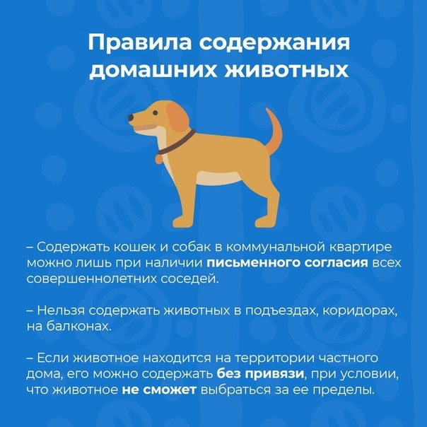
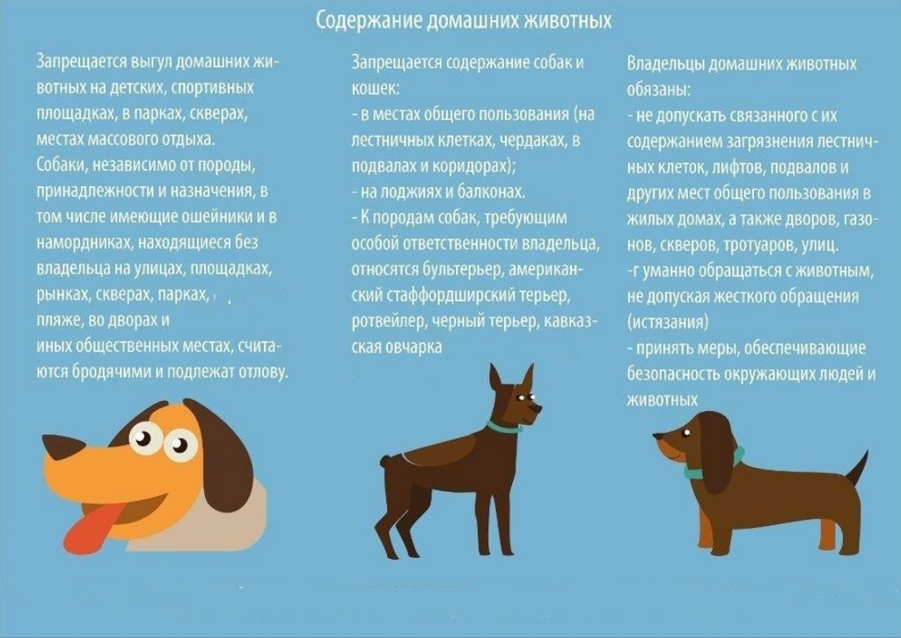
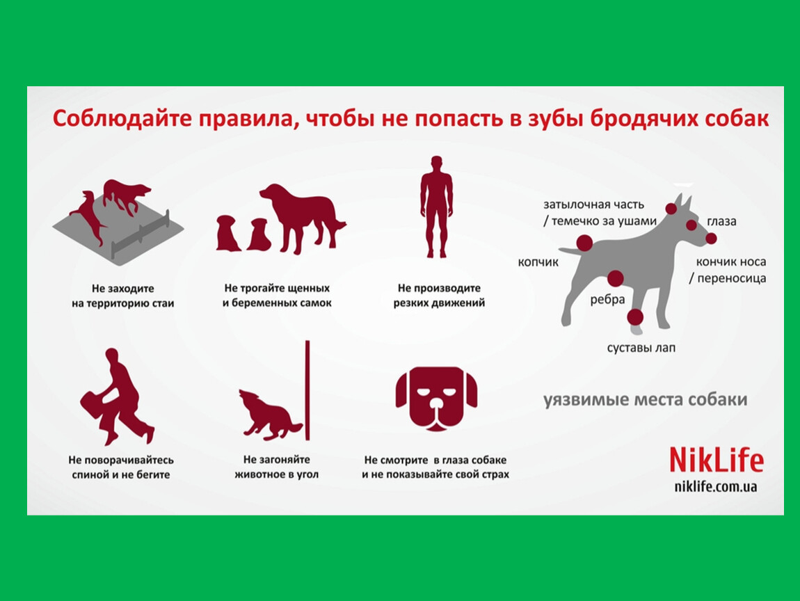
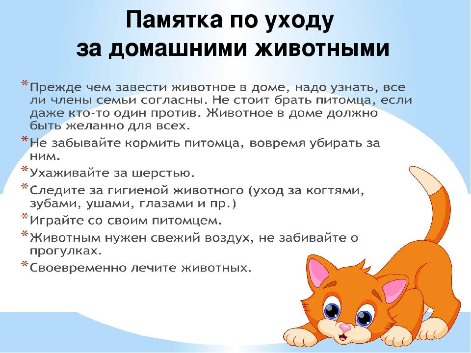
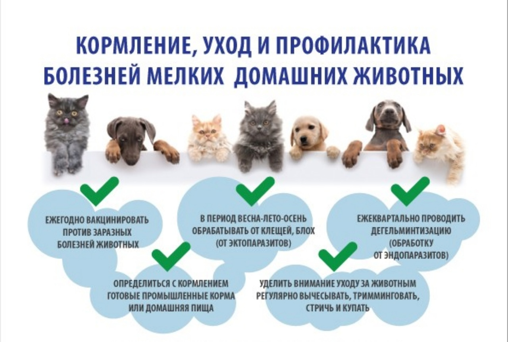

Бездомные животые на улицах городов - актуальная проблема для людей.
Беспризорные питомцы, будучи брошенными, замерзают, умирают от голода и от жестокости людей, страдают от болезней, которые могут быть распространены и на человека из-за животной агрессии.
Данная проблема не может оставаться без внимания, ведь это не про наше прошлое, а про настоящее и будущее.
Сайт, помогающий десяткам найти свой дом.

Актуален для города Подольск, Московской области.
На данном сайте можно ознакомиться с каталогами:
- Помощь
- Ветклиники г.Подольск (основная информация, контакты, адреса)
- Приюты г.Подольск (основная информация, контакты, адреса)
- Ссылки на волонтерские движения, оказывающие помощь брошенным животным
- Памятка о правильном содержании домашних животных
- Информация о болезнях, которые могут передаваться бродячими животными
- Актуальные анкеты потерянных животных
Памятки





Болезни, которые могут передаваться бродячими животными
Иногда очень хочется приласкать или угостить бездомыша. Помните, что уличные животные могут вести себя непредсказуемо.
При контакте может не случиться ничего плохого, а могут произойти следующие неприятности.
Животное может поцарапать или укусить
Так можно заразиться бешенством, столбняком и болезнью кошачих царапин. Еще в слюне и на поверхности когтей много патогенных микробов, которые при повреждении кожи попадают в рану и вызывают нагноение.
⠀Часто укусы сопровождаются аллергической реакцией у людей: повышается температура, травмированное место краснеет и опухает.⠀⠀⠀ Вы и врач никак не сможете понять наверняка есть ли у животного бешенство.
У этой болезни нет специфических симптомов. Диагноз «бешенство» ставится посмертно при исследовании внутренних органов животного.
Заражение гельминтами теоретически возможно
Самое распространённое заболевание - токсокароз. Люди заболевают при случайном проглатывании личинок, которые могут находиться на шерсти.
Заражение дерматофитозом - лишаем
Достаточно просто погладить зараженное животное.
Самостоятельно сложно определить болен бездомный или нет. На шерсти может не быть никаких проявлений, а животное - бессимптомный носитель.
Контакты с уличными животными - риск
Вы не знаете какой характер у питомца и есть ли у него опасные для людей болезни.

Если хочется уделить внимание бездомышу, советуем соблюдать правила:
- Трогайте только тех, кто хочет контактировать. Ласкайте аккуратно и как только заметите что животное не довольно - заканчивайте. Детям однозначно лучше не разрешать трогать животных, в которых вы не уверены.
- Не кормите с рук. В порыве эмоций животное может напасть на вас.
- После общения сразу тщательно вымойте руки с мылом и обработайте антисептиком.
- Если уличному животному нужна помощь, помните про меры личной гигиены и технику безопасности: используйте защитные воротники, покрывала, переноски, намордники, шлейки…
Если укусило или поцарапало животное!
Тщательно промойте рану водой с мылом, обработайте перекисью или хлоргексидином и обратитесь в травмпункт.